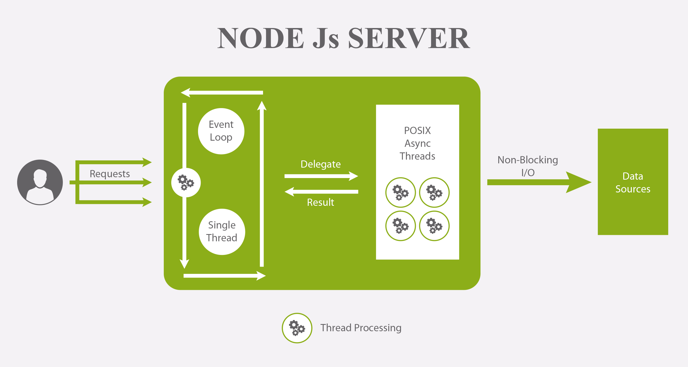

Что такое Node.js
Node.js – это платформа, основанная на среде выполнения Chrome JavaScript, для простого создания быстрых и масштабируемых сетевых приложений.
Платформа Node.js построена на базе JavaScript движка V8 от Google, который используется в браузере Google Chrome и в других браузерах. Это означает, что Node.js пользуется наработками тысяч инженеров, которые сделали среду выполнения JavaScript Chrome невероятно быстрой и продолжают работать в направлении совершенствования V8. Данная платформа, в основном, используется для создания веб-серверов, однако сфера её применения этим не ограничивается.
Node.js использует управляемую событиями не блокирующую модель ввода/вывода, которая делает ее легкой и эффективной, идеально подходящей для приложений с интенсивным использованием данных в реальном времени, работающих на распределенных устройствах. Когда Node.js нужно выполнить операцию ввода-вывода, вроде загрузки данных из сети, доступа к базе данных или к файловой системе, вместо того, чтобы заблокировать ожиданием результатов такой операции главный поток, Node.js инициирует её выполнение и продолжает заниматься другими делами до тех пор, пока результаты выполнения этой операции не будут получены.
Особенности Node.js
- Асинхронный и управляемый событиями – все API библиотеки Node.js являются асинхронными, то есть неблокирующими. По сути, это означает, что сервер на базе Node.js никогда не ждет, пока API вернет данные. Сервер переходит к следующему API после его вызова, а механизм уведомления о событиях Node.js помогает серверу получить ответ от предыдущего вызова API.
- Node.js – это очень быстрая платформа. JavaScript-код, выполняемый в среде Node.js, может быть в два раза быстрее, чем код, написанный на компилируемых языках, вроде C или Java, и на порядки быстрее интерпретируемых языков наподобие Python или Ruby. Причиной подобного является неблокирующая архитектура платформы, а конкретные результаты зависят от используемых тестов производительности.
- Однопоточный, но очень масштабируемый – Node.js использует однопотоковую модель с зацикливанием событий. Механизм событий помогает серверу реагировать неблокирующим образом и обеспечивает высокую масштабируемость сервера по сравнению с традиционными серверами, которые создают ограниченные потоки для обработки запросов. Node.js использует однопотоковую программу, и та же самая программа может обслуживать гораздо большее количество запросов, чем традиционные серверы, такие как Apache HTTP Server.
- Без буферизации – приложения Node.js никогда не буферизуют данные. Эти приложения просто выводят данные кусками.
- Лицензия – Node.js выпущен под лицензией MIT.
Где используется Node.js
- Приложения, связанные с вводом / выводом
- Приложения для потоковой передачи данных
- Интенсивное использование данных в реальном времени (DIRT)
- Приложения на основе JSON API
- Одностраничные приложения
Установка Node.js
Node.js можно устанавливать различными способами, которые мы сейчас рассмотрим.
Официальные установочные пакеты для всех основных платформ можно найти здесь: https://nodejs.org/en/download/
Существует ещё один удобный способ установки Node.js, который заключается в использовании менеджера пакетов, имеющегося в операционной системе.
Список менеджеров пакетов для других операционных систем, в том числе — для Linux и Windows, можно найти здесь: https://nodejs.org/en/download/package-manager/
Популярным менеджером версий Node.js является nvm. Это средство позволяет удобно переключаться между различными версиями Node.js, с его помощью можно, например, установить и попробовать новую версию Node.js, после чего, при необходимости, вернуться на старую. Nvm пригодится и в ситуации, когда нужно испытать какой-нибудь код на старой версии Node.js.
Мы бы посоветовали начинающим пользоваться официальными установщиками Node.js. Пользователям macOS я порекомендовал бы устанавливать Node.js с помощью Homebrew.